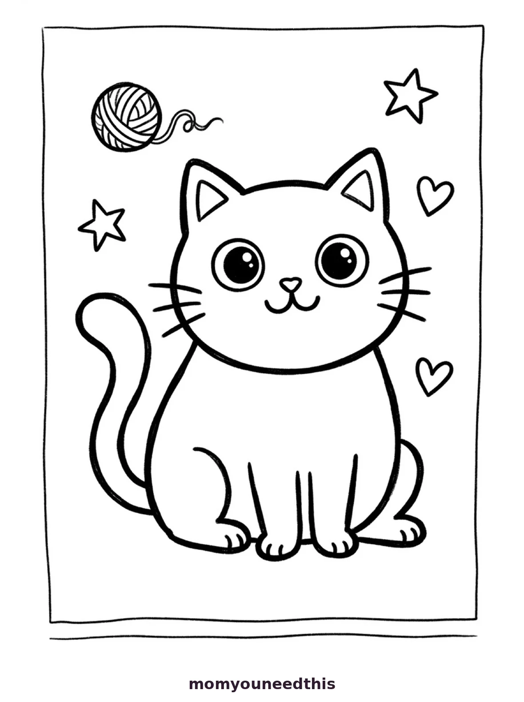
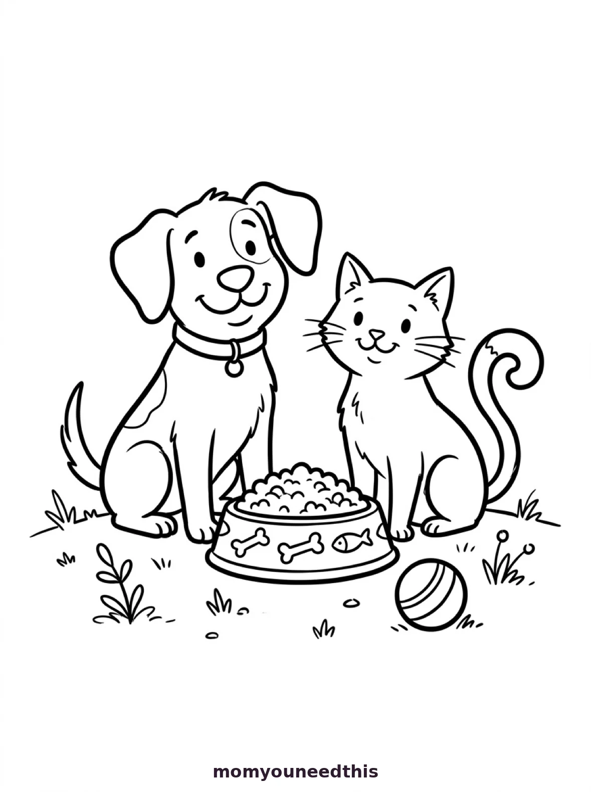
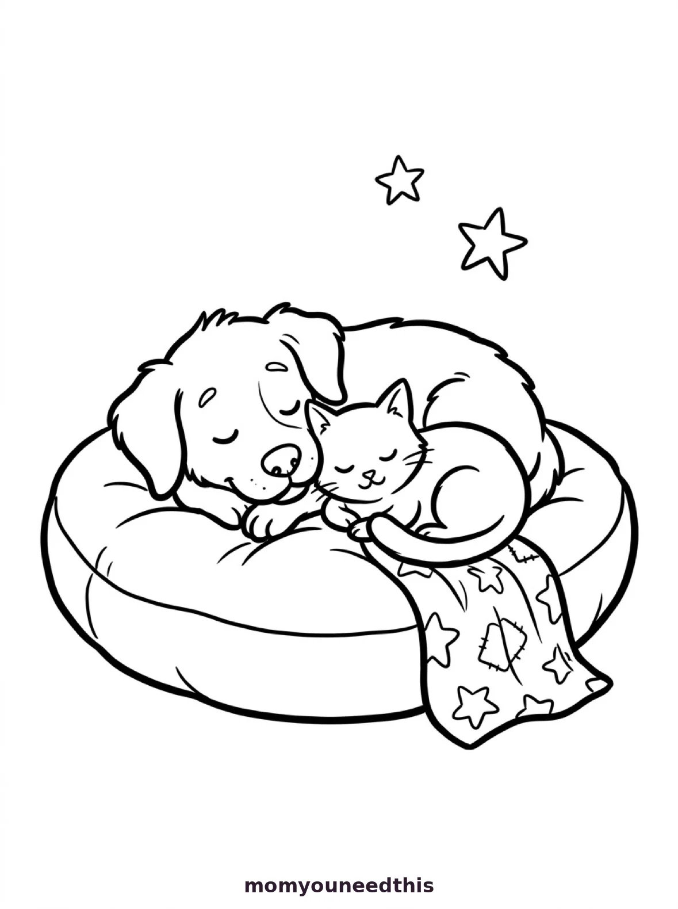
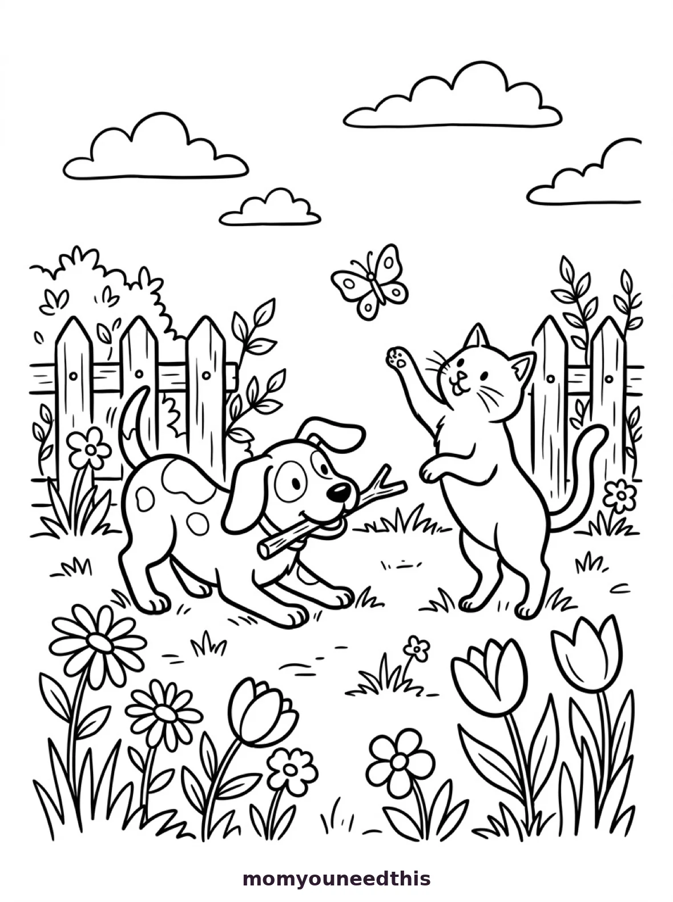

Free Cat Coloring Pages
Looking for free cat coloring pages? Download our free original cat coloring pages below — one cat-only sheet plus three pages with a dog and a cat together — no signup needed. Just tap download, print at home, and let the coloring fun begin! Print the cats coloring pages one at a time for a quick color, or stack all four cat coloring book pages and staple them into a little book of your own.
Last updated: November 25, 2026
Quick Answer
Yes — this page has four free printable coloring pages: one cat-only sheet and three dog and cat coloring pages, all with bold outlines and big spaces made for little hands. Download it, print it on letter-size paper, and hand over the crayons. No signup, no cost, just a cute cat to color.
At a Glance
- Ages: 2–6
- Pages: 4 free printables
- Format: Print at home, letter size
- Cost: Free, no signup
- Supplies: Crayons or markers
- Time: 10–20 minutes
🐱 How To Use This Page
- Browse the list and pick a coloring page your child will love.
- Tap the link to open our free download page.
- Print on letter-size paper — print a few different designs for variety.
- Color together with crayons or markers and display the favorites.
🐱 Why Kids Love Cat Coloring Pages
Kids come back to these cats coloring pages because cats forgive every color choice. Cats are the perfect coloring subject because there are no rules. A cat can be pink, purple, rainbow, or all three at once — and every version is correct. That freedom is exactly what makes cat coloring pages so good for kids: they practice choosing colors, staying roughly in the lines, and making creative decisions without any fear of getting it wrong.
The cat's tail and ears are the best part. The tail can curl any way they want, the ears can be pink inside, and the body can be any color — or striped, or spotted. The eyes get their own color, the nose gets another, and suddenly they've made a whole picture with just a few crayons.
✏️ Cat Coloring Tips
- Let the cat be any color. Orange, black, white, gray, rainbow — every cat color is correct. The stripes and spots are where kids get creative.
- Draw a name tag. After coloring, let them name their cat and write the name under the picture. It turns a coloring page into "their" cat.
- Name the colors. "You picked purple for the ears!" turns coloring into color-word practice.
- Display it. A finished cat on the fridge is the fastest way to get asked for another one.
🐱 Cat Coloring Pages

🎨 Download Your Free Cat Coloring Page
A cute, original cat coloring page made for little hands — bold outlines, big spaces, zero signup.
⬇️ Download Free Coloring Page 🖨️ Print🎁 Free printable for toddlers & preschoolers
🐶🐱 Dog and Cat Sharing a Food Bowl Coloring Page

🎨 Download the Dog and Cat Food Bowl Coloring Page
A dog and a cat sitting side by side with a shared food bowl and a ball — bold outlines, big spaces, zero signup.
⬇️ Download Dog & Cat Food Bowl Page 🖨️ Print Food Bowl Page🎁 Free printable for toddlers & preschoolers
🐶🐱 Dog and Cat Sleeping Together Coloring Page

🎨 Download the Dog and Cat Sleeping Together Coloring Page
A dog and a cat sleeping curled up together on a round cushion — bold outlines, big spaces, zero signup.
⬇️ Download Sleeping Pets Page 🖨️ Print Sleeping Pets Page🎁 Free printable for toddlers & preschoolers
🐶🐱 Dog and Cat Playing in the Garden Coloring Page

🎨 Download the Dog and Cat Garden Play Coloring Page
A dog holding a stick and a cat batting at a butterfly in a garden with a fence and flowers — bold outlines, big spaces, zero signup.
⬇️ Download Garden Play Page 🖨️ Print Garden Play Page🎁 Free printable for toddlers & preschoolers
More Coloring Pages
Tap any picture to open its theme page and download the free printable.


One more idea: after coloring, ask your child to tell you a story about their cat. Where does it live? What's its name? What does it eat? Writing down their story (or letting them dictate it) turns a coloring page into a language activity. The picture they colored becomes the illustration for a story they invented — and that's the beginning of creative writing.
🐱 Cat Coloring Pages for Different Ages
Kept together, these cat coloring book pages make a first coloring book that grows with your child. Cat coloring pages work for a wide age range because cats are familiar to every kid. A 2-year-old will scribble the whole cat in one color — and that's perfect. They're practicing grip, pressure, and the joy of making marks. The cat doesn't care about staying in the lines.
A 3- to 4-year-old starts choosing colors on purpose. "The cat is orange!" "The tail is black!" This is where cat coloring pages really shine — the body, tail, ears, and eyes are separate areas, so kids practice color planning. They decide what goes where, and every decision is theirs.
A 5- to 6-year-old can handle detail work. They might add stripes, spots, a collar, or a background. At this age, cat coloring pages become a starting point for storytelling — "This cat lives in a barn and chases mice." Let them add to the page. The printable is just the beginning.
🐾 More Cat Activities
Once they've colored the cat, keep the fun going. Cut out the finished cat and glue it to cardboard to make a puppet. Tape it to a popsicle stick and put on a cat show. Or use it as the cover of a homemade storybook — "The Adventures of [Cat's Name]" — with your child dictating the story and you writing it down.
Pair the cat coloring page with the cat drawing tutorial for a two-part activity: first they draw their own cat in 6 steps, then they color this printable. Drawing + coloring the same subject teaches kids to see the difference between making a picture and decorating one.
For a quiet-time activity, set out the cat coloring page with the paint by numbers sheets. Coloring the cat is free-form — any colors, any order. Paint by numbers is structured — match the number, fill the color. Offering both lets kids pick the style that fits their mood.
🐶 Love Dogs Too? Grab the Dog Coloring Page
If your child loves dogs as much as cats, three pages on this page show a dog and a cat together — sharing a food bowl, sleeping on a cushion, and playing in the garden. This page also has the cat-only printable, and the dog printable is its own sheet — a friendly pup with the same bold outlines and big spaces. Print the cat first, then the dog, and let your child decide which pet to color first.
Coloring the cat page and the dog page is a natural way to talk about how dogs and cats are different and alike. Dogs have floppy ears, cats have pointy ones. Both have tails, four legs, and soft fur. While coloring, ask your child which pet they would pick — the answers are always entertaining.
Siblings can split the set, too — one child colors the dog sheet, the other colors the cat sheet, and coloring side by side teaches turn-taking and sharing without any fuss.
For a playdate, print one cat sheet and one dog sheet per child so everyone colors both pets. Comparing finished pages is half the fun, and the pages make great fridge art.
Download the dog printable and color a friendly pup.
🐾 Cat and Dog Coloring Pages for Animal Fans
These dog cat coloring pages celebrate the two most beloved pets with four printables on this page: one cat-only sheet and three pages with a dog and a cat together. Print them all for kids who cannot decide which animal they love more.
Cat and dog coloring pages work well for siblings, too. One child colors the dog sheet, the other colors the cat sheet. Coloring side by side teaches turn-taking and sharing without any fuss.
Print a stack of cat and dog coloring pages for a pet-themed afternoon. Add crayons, markers, or colored pencils, and let kids color both furry friends.
Download the dog printable to color alongside the cat.
❓ Cat Coloring Pages FAQ
Are these cat coloring pages really free?
Yes — the coloring page on this page is a free original printable from MomYouNeedThis. Nothing here costs anything.
What ages are these coloring pages for?
They are perfect for toddlers, preschoolers, and young kids. Choose simpler designs for little ones and more detailed pages for older kids.
How do I print a coloring page?
Tap any link above to open our page, then use their download or print button. Regular letter-size paper works perfectly. The print button opens the full-size page in a new tab if you prefer to print from there.
Are these cats coloring pages free to print?
Yes — these cats coloring pages are 100% free to download and print at home. No signup, no payment, just print and color.
How do I make a coloring book from these cat coloring book pages?
Print the cat coloring book pages you like, stack them in order, and staple along the left edge. Add a cover page with your child's name for a finished homemade coloring book.
Can I get a dog coloring page too?
Yes — three pages on this page show a dog and a cat together, and there is also a separate dog-only coloring page linked on this page, so kids can color both favorite pets.
Are the cat and dog coloring pages good for toddlers?
Yes — the cat coloring page, the three dog-and-cat pages, and the separate dog coloring page all use big shapes and bold outlines sized for toddlers and preschoolers. Little hands can color comfortably without tiny details.
🔗 More Free Printables You’ll Love
- Free Alphabet Coloring Pages Free printable alphabet coloring pages for little learners.
- Free Letter B Coloring Pages Free printable letter b coloring pages for little learners.
- Free Letter C Coloring Pages Free printable letter c coloring pages for little learners.
- Free Math Coloring Pages Free printable math coloring pages for little learners.